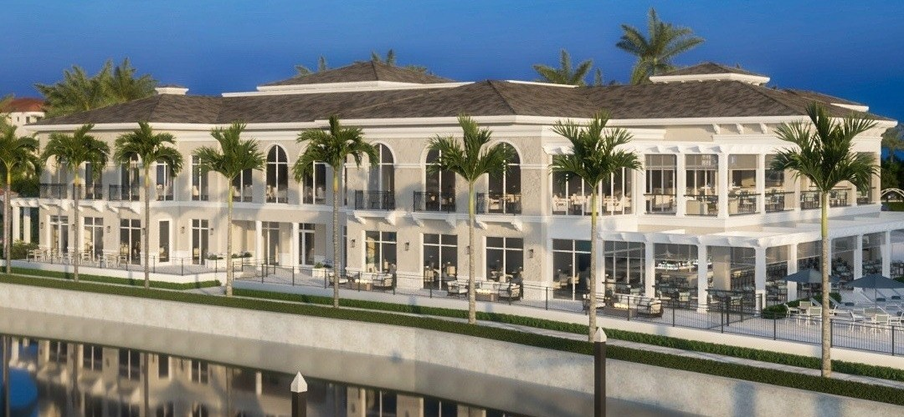

Hospitality / Country Club

Gulf Harbour Yacht & Country Club is one of Southwest a well-known Florida private club communities - a gated waterfront enclave on the Caloosahatchee River in Fort Myers with a deep-water marina, championship golf, and resort-class amenities. The club serves members who expect a high standard in every detail of the facility, from the course to the clubhouse glass.
ACG handled the commercial glazing scope for the club - delivering the complete glazing package for a project where finish quality and schedule performance are both non-negotiable. Country club and hospitality glazing requires clean sightlines, premium framing, and installation that respects the occupied environment around it.
ACG provided and installed the commercial glazing package for Gulf Harbour's amenity facilities - storefront systems, entrance assemblies, and glazed openings throughout. Southwest Florida's Gulf Coast climate means every system is impact-rated, designed to perform through hurricane season while maintaining the aesthetic standard a club of this caliber demands.
The project was built for Curran Young Construction - a respected Southwest Florida general contractor with a portfolio that spans luxury residential, commercial, and club projects throughout Lee and Collier counties. ACG delivered the glazing scope to schedule and spec.
Gulf Harbour is one of multiple Fort Myers and Naples-area projects in ACG's portfolio. ACG's Naples office serves Southwest Florida's active construction market - from luxury hospitality and country clubs to multifamily, healthcare, and retail. The same operations model that drives ACG's Treasure Coast business runs on the West Coast: lean management, coordinated scheduling, one point of contact, full scope accountability.
The glazing package on Gulf Harbour Country Club included clubhouse glazing renovation. ACG specified, supplied, and installed ESWindows storefront, Euro-Wall - manufactured by ACG's seven approved partner lines: ESWindows, Euro-Wall, PGT, Allegion, TGP, Slimpact, and Aldora.
The scope was sequenced to Waypoint's field schedule, with weekly coordination meetings, RFI turn-around inside 24 hours, and submittals tracked against the construction critical path. ACG's three-office Florida footprint (West Palm Beach HQ, Naples, Tampa) keeps a project supervisor within driving distance of every active job site, and the Estero location pulled supervision out of our Naples office.
Why this matters for the Estero market. Gulf Harbour Country Club is not just another envelope. Private gated golf community on Gulf Harbour; post-Ian Lee County. Subcontractors who deliver here build a body of evidence GCs and developers can verify - first-pass inspection clearance, on-time turnover, accurate submittals, no callback claims. Those four metrics are how a glazing sub gets called back, and they are the entire reason ACG was selected for this scope.
For developers and GCs evaluating subcontractors for similar work in Estero or surrounding Lee County, Gulf Harbour Country Club is on our portfolio precisely because it represents the standard of execution we hold across every project, regardless of size.
Country clubs, marinas, resort amenities - ACG delivers hospitality-grade glazing packages throughout Southwest Florida. Send your plans and get a complete scope in 48 hours.
Send Us Plans